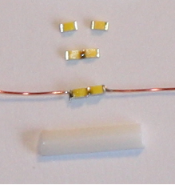

Krümelbahn
KrümelbahnIn 4 Schritten zur Leuchtstoffröhre
Kenner des Bw Michelstadt wissen es: an der Dieseltankstelle leuchteten unter dem Vordach der Betankungsanlage zwei Mikrobirnchen mit axialem Drahtanschluss und 1mm Durchmesser als Leuchtstoffröhrenimitation. Leuchteten: denn beim letzten Moduleinsatz hat es eines der Birnchen erwischt - durchgebrannt. Ersatz war natürlich nicht vorhanden und so sollte eine neue und dauerhaftere Lösung her. Viessmann hat zwar eine Bahnsteigleuchte, die an eine Leuchtstofflampe angelehnt ist, aber gefallen hat sie mir nicht. Also musste eine eigene Idee her:- zwei (je nach gewünschter Länge der Leuchtstoffröhre auch drei) SMD-Leds 0603 (möglichst kaltweiß - warmweiß passt für Leuchtstoffröhren weniger gut) werden direkt aneinander (also in Reihe) gelötet
- Kupferlackdraht dient als Anschlussdraht
- die "Glaskuppel" wird aus einem milchig weißem Kunststoffröhrchen (z.B. von einem Wattestäbchen, Durchmesser 2,5 mm) hergestellt:
- von dem Röhrchen ein ca. 10 mm langes Stück (bzw. Länge nach Bedarf) abschneiden
- und der Länge nach halbieren, das ergibt zwei Halbschalen als Abdeckung für die Leuchtdioden
- Vorwiderstand (nicht vergessen, je nach verwendeten LEDs ca. 1kOhm)
- Fertig:

Die Schritte
zwei SMD-LEDs
in der Mitte zusammengelötet
zwei Kupferlackdrähte für den Anschluss
das milchige Kunststoffröhrchen, bereits halbiert, Länge nach Bedarf

Ansteuerelektronik
Literaturhinweise
- Miba 3/19 (Seite 61 und 64): Neonröhren im Modell – nachbilden und ansteuern: Leuchtstofflampen-Simulator
Diese und weitere Anlagenausgestaltungen habe ich in
beschrieben.